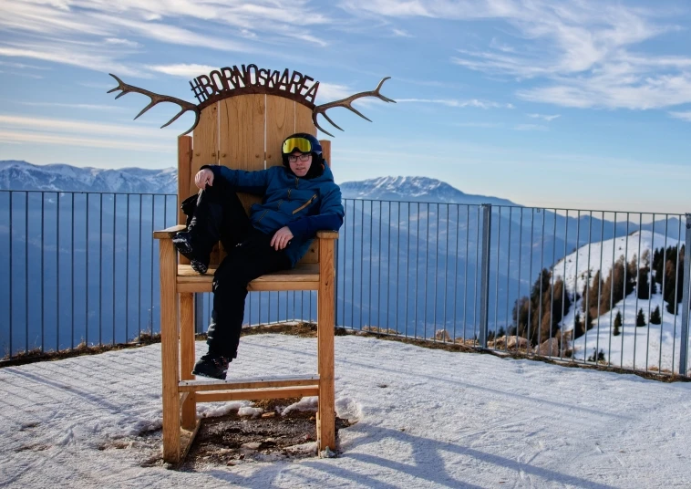

Vítej na mém webu
Fotografování je pro mě životní vášní. Díky taneční škole Dance Nation Plzeň jsem se vydal cestou profesionálního fotografa a s nadšením vítám každou příležitost k zachycení okamžiků. Snažím se o snímky plné emocí a energie, které vám budou dělat radost po celý život. Ať už fotím v ateliéru, v parku, nebo na tanečním parketu, vždy se snažím o maximální profesionalitu a kreativní přístup.
Prohlédni si fotogalerii, zjisti více o mně nebo se podívej na nabídku služeb. Pokud máš zájem o tisk fotografií, vše najdeš v příslušné sekci.